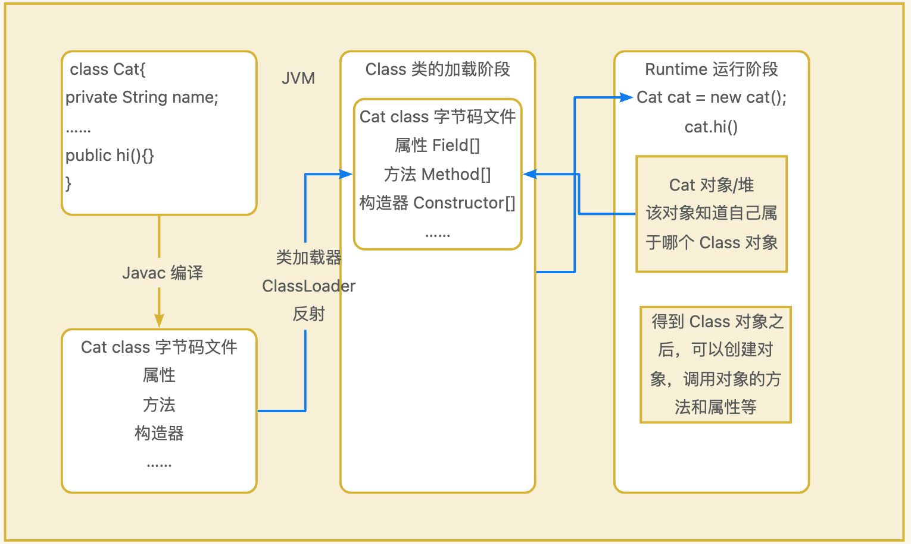
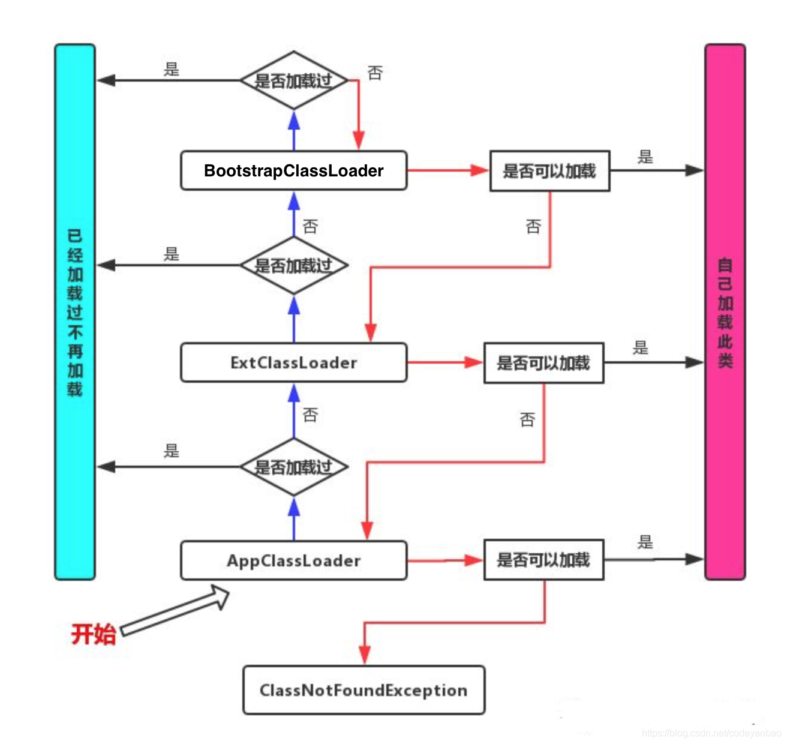
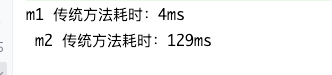

【7】 反射
概念
反射就是把 Java 类中的各个成分映射成一个个的 Java 对象。
即在运行状态中，对于任意一个类，都能够知道这个类所有的属性和方法，对于任意一个对象，都能调用它的任意一个方法和属性。
这种动态获取信息及动态调用对象方法的功能叫 Java 的反射机制。
简而言之，我们可以通过反射机制，获取到类的一些属性，包括类里面有哪些字段，有哪些方法，继承自哪个类，甚至还能获取到泛型，它的权限非常高，慎重使用。
:::color3 什么是反射 ？
- JAVA 反射机制是在运行状态中，对于任意一个类，都能够知道这个类的所有属性和方法；
- 对于任意一个对象，都能够调用它的任意一个方法和属性；
- 这种动态获取的信息以及动态调用对象的方法的功能称为 Java 语言的反射机制。
:::
:::color3 1. 反射机制允许程序在执行期借助于 Reflection API 取得任何类的内部信息（比如成员变量，构造器，成员方法等等），并能操作对象的属性及方法。反射在设计模式和框架底层都会用到。 2. 加载完类之后，在堆中就产生了一个 Class 类型的对象（一个类只有一个 Class 对象），这个对象包含了类的完整结构信息。通过这个对象得到类的结构。这个对象就像一面镜子，透过这个镜子看到类的结构，所以。形象的称之为：反射。
----- 韩顺平
:::
类加载机制

了解一下类的加载机制，一个类是如何被加载和使用的，有助于理解反射机制的实现：
在 Java 程序启动时，JVM 会将一部分类（class 文件）先加载（并不是所有的类都会在一开始加载），通过ClassLoader 将类加载，在加载过程中，会将类的信息提取出来（存放在元空间中，JDK 1.8 之前存放在永久代），同时也会生成一个 Class 对象存放在内存（堆内存），注意此 Class 对象只会存在一个，与加载的类唯一对应！
思考：既然说和与加载的类唯一对应，那如果我们手动创建一个与 JDK 包名一样，同时类名也保持一致，那么JVM 会加载这个类吗？
package java.lang;
public class String { //JDK提供的String类也是
public static void main(String[] args) {
System.out.println("我姓s，我叫syt");
}
}
我们发现，会出现以下报错：
错误: 在类 java.lang.String 中找不到 main 方法, 请将 main 方法定义为:
public static void main(String[] args)
但是我们明明在自己写的 String 类中定义了 main 方法啊，为什么会找不到此方法呢？实际上这是 ClassLoader的双亲委派机制在保护 Java 程序的正常运行：

实际上我们的类最开始是由 BootstarpClassLoader 进行加载，BootstarpClassLoader 用于加载 JDK 提供的类，而我们自己编写的类实际上是 AppClassLoader，只有 BootstarpClassLoader 都没有加载的类，才会让AppClassLoader 来加载，因此我们自己编写的同名包同名类不会被加载，而实际要去启动的是真正的 String 类，也就自然找不到 main 方法了！
public class Main {
public static void main(String[] args) {
System.out.println(Main.class.getClassLoader()); //查看当前类的类加载器
System.out.println(Main.class.getClassLoader().getParent()); //父加载器
System.out.println(Main.class.getClassLoader().getParent().getParent()); //爷爷加载器
System.out.println(String.class.getClassLoader()); //String类的加载器
}
}
由于 BootstarpClassLoader 是 C++ 编写的，我们在 Java 中是获取不到的。

反射的使用
在 Java 中，Class 类与 java.lang.reflect 类库一起对反射技术进行了全力的支持。
在反射包中，我们常用的类主要有 Constructor 类，表示的是 Class 对象所表示的类的构造方法，利用它可以在运行时动态创建对象，Field 表示 Class对象所表示的类的成员变量，通过它可以在运行时动态修改成员变量的属性值(包含 private)、Method 表示 Class对象所表示的类的成员方法，通过它可以动态调用对象的方法(包含 private)。
Class类对象的获取：
@Test
public void classTest() throws Exception {
// 获取 Class 对象的三种方式
logger.info("根据类名: \t" + User.class);
logger.info("根据对象: \t" + new User().getClass());
logger.info("根据全限定类名:\t" + Class.forName("com.test.User"));
// 常用的方法
logger.info("获取全限定类名:\t" + userClass.getName());
logger.info("获取类名:\t" + userClass.getSimpleName());
logger.info("实例化:\t" + userClass.newInstance());
}
反射的优缺点
优点
可以动态的创建和使用对象（框架底层核心），使用灵活，没有反射机制，框架技术就失去底层支撑。
缺点
反射是解释执行，对速度有影响。
public static void main(String[] args) throws ClassNotFoundException, InvocationTargetException, InstantiationException, IllegalAccessException, NoSuchMethodException {
m1();
m2();
}
// 传统方法
public static void m1(){
Cat cat = new Cat();
long start = System.currentTimeMillis();
for (int i = 0; i < 90000000; i++) {
orderProcessMediaVO.hi();
}
long end = System.currentTimeMillis();
System.out.println("m1 传统方法耗时：" + (end - start) + "ms");
}
public static void m2() throws ClassNotFoundException, InstantiationException, IllegalAccessException, NoSuchMethodException, InvocationTargetException {
Class<?> cls = Class.forName("com.xxx.cat");
Object o = cls.newInstance();
Method hi = cls.getMethod("hi");
long start = System.currentTimeMillis();
for (int i = 0; i < 90000000; i++) {
hi.invoke(o); //反射调用
}
long end = System.currentTimeMillis();
System.out.println(" m2 传统方法耗时：" + (end - start) + "ms");
}

反射调用优化
- Method和Field、Constructor对象都有setAccessible()方法；
- setAccessible作用是启动和禁用访问安全检查的开关；
- 参数值为true表示反射的对象在使用时取消访问检查,提高反射的效率，参数值为false则表示反射的对象执行访问检查
所以关掉。

更新: 2024-04-16 15:44:13
原文: https://www.yuque.com/xiaoshan_wgo/codingnotes/gipi3w4opiwlv2ho